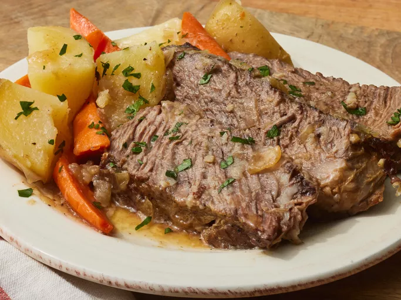

Beef Pot Roast

A classic tender chuck roast with potatoes and carrots.
Ingredients
- 2 tsp olive oil
- 4 pounds boneless chuck roast
- 1 onion, chopped
- 2 cloves garlic, minced
- 2 bay leaves
- 1 tsp salt
- 1/2 teaspoon freshly ground black pepper
Steps
- Preheat the oven to 325 degrees F (165 degrees C)
- PHeat a Dutch oven or heavy pot over medium-high heat.
Add oil, then sear meat in the center of the pan for 4 minutes.
Turn meat over with tongs; sear for 3 to 4 minutes on each side.
Remove meat from the pot.
- Arrange onion, garlic, and 1 bay leaf in the bottom of the pan;
sprinkle with salt and pepper. Return meat to the pan,
place remaining bay leaf on top of meat, and cover.
- Cook in the preheated oven for 30 minutes. Reduce heat to 300 degrees F (150 degrees C)
and continue cooking until tender, about 1 ½ hours more.
An instant-read thermometer inserted in the thickest part of the roast
should read 145 degrees F (65 degrees C).
- Transfer roast to a platter and let rest for 10 to 15 minutes.
Slice and top with gravy.
Homepage